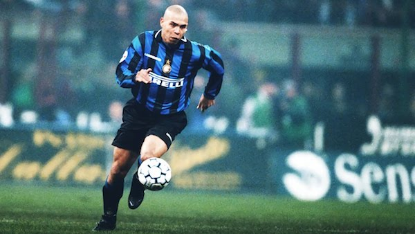

We all had our heroes growing up and certanly some of us were influenced by more than one character, from cartoon figures, to movie actors, sports icons and family members.
They say the first real life hero every child grows up with, is his/her mom or dad, because they see those faces day by day, since day one on this planet. Maybe not exactly day one, but you get the point.
As we pass the 3-years-old mark, we start realizing a bit more about what this world is about; we start playing with particular toys, which sometimes we even take to bed with us. Be honest, how many of you still have a teddy bear sitting in a corner of your bed, at night? I remember there was a period when I could’t fall asleep without holding a small white, with colorful prints on, towel in my hands. Hey, a kid’s gotta do to fall asleep, what a kid’s gotta do.
In kindergarten I must’ve had the best hero, one who always fought the evil alongside 3 of his buddies. Lesson learned: surround yourself with friends and be a team player, it has lots of benefits. My hero, ofcourse, was Leonardo, the blue masked ninja turtle, the one who carried two swords around. We used to play as “turtles” every single day, “fighting” God-knows which evil, but we had a blast!
When elementary school came, I started being more and more into sports, and who else to get inspired by, in the 90s? The one and only Michael Jordan! Back in those days, the sport class used to be held in a tiny gym, the size of a normal classroom, with basketball baskets standing at a very reachable height. Can you imagine us dunking like we were in the NBA slam-dunk contest? Oh, the joy!
Everyone in my neighborhood was playing football at the time. In the schoolyard, behind the apartment buildings, on the street… everywhere you’d look, you’d see a soccer game going on. So I switched from Jordan to Ronaldo. Not Cristiano Ronaldo who plays today for Real Madrid, but the original, Brazilian striker, “Il Fenomeno” Ronaldo Luiz Nazario de Lima. He was so spectacular, all the kids craved for a fake t-shirt with his name on the back. Original jerseys were not an option back then.
As I got older, I started diversifying my horizons and began looking with admiration at people from different fields, from music, to science, to chess players, to computer geniuses and one thing that stuck with me after all these years was that, no matter how much you “love” someone, at the end of the day he is only human too and makes mistakes (lots of them) just like everybody else, so take the good parts out of his journey and create your own hero, namely you.